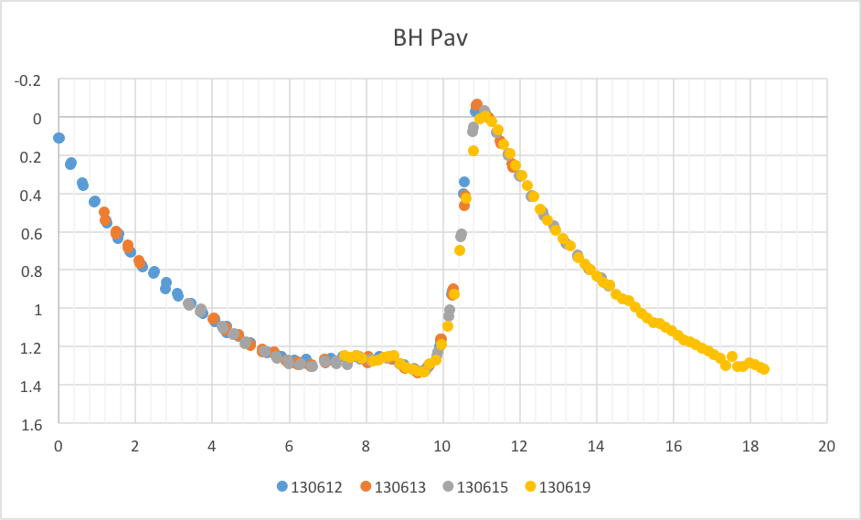
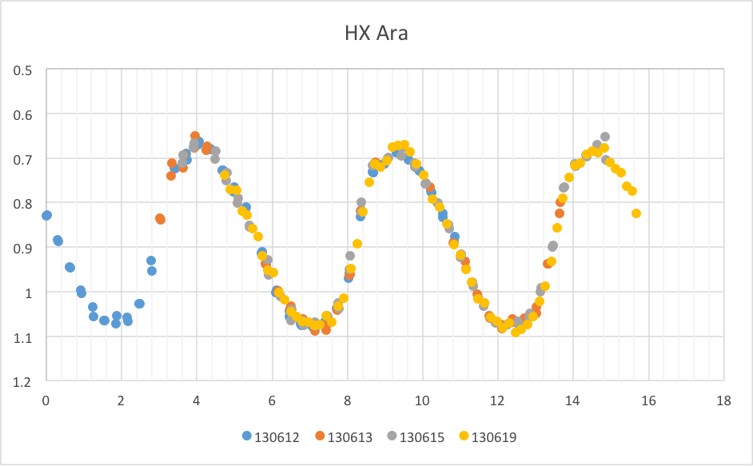
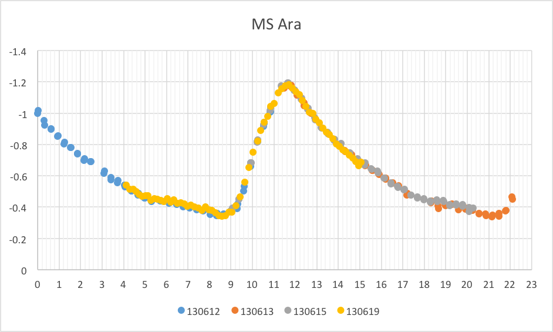
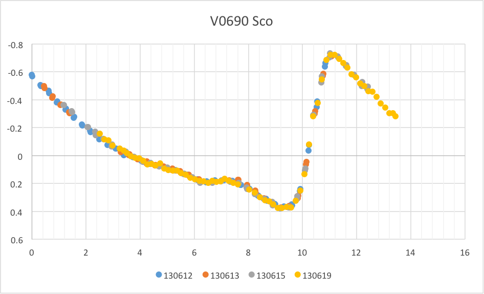
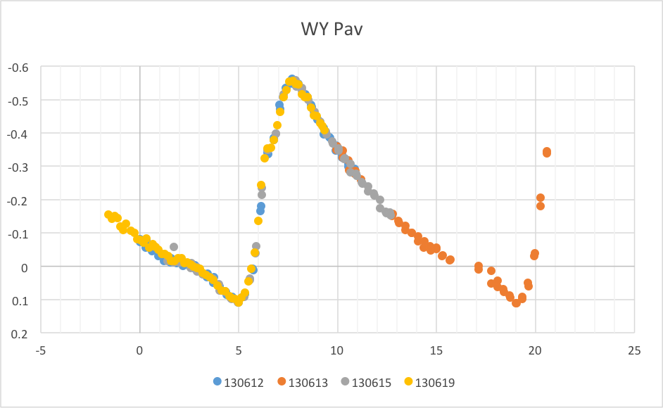
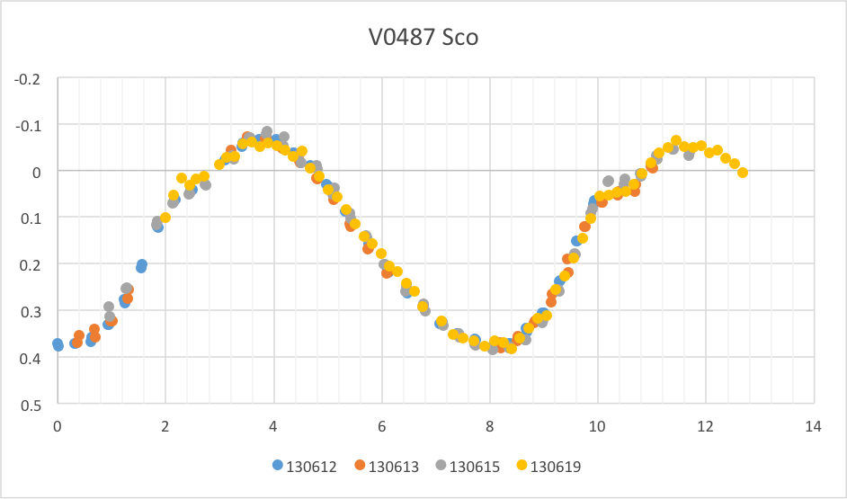
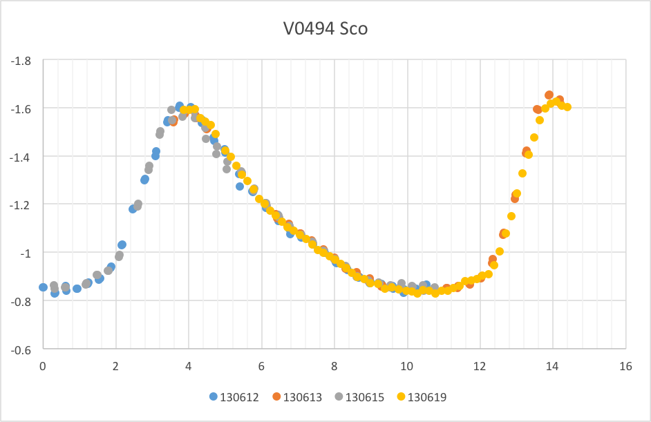

Seven RR Lyrae variable stars were imaged over 4 nights spanning 12 June to 19 June. Targets were chosen with ‘all night’ viewing potential, to maximise data collection over a single night.

Aperture photometry was performed using MaxIM DL’s Photometry function to derive instrumental magnitudes for each target. The resultant light curves were exported as CSV files for analysis in Microsoft Excel.
Excel was used to create light curves for each of the targets. Custom formulae were used to ‘wrap’ time and provide for magnitude compensation. An additional formula was created to align curves by specifying a period based on a starting point determined through inspection of the plotted curves. Changes as small as 0.001 hr were used to fine tune alignment of the 4 curves, allowing a very accurate period to be determined.
This ‘calculated’ period was then compared to published periods, available from the AAVSO VSI service.
Results
1. BH Pav
Calculated period = 11.447 hours
Published period = 11.44689 hours
2. HX Ara
Calculated period = 5.265 hours
Published period = 5.256 hours

3. MS Ara
Calculated period = 12.600
Published period = 12.59961

4. V0690 Sco
Calculated Period = 11.814 hours
Published Period = 11.81409 hours

5. WY Pav
Calculated Period = 14.130 hours
Published Period = 14.12573 hours

6. V0487 Sco
Calculated Period = 7.900 hours
Published Period = 7.899037 hours

7. V0494 Sco
Calculated Period = 10.250 hours
Published Period = 10.2552 hours
